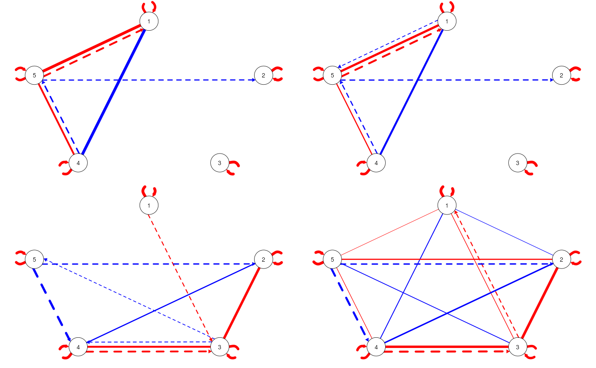

## Loading required package: ggplot2
library(dynrautoVAR)
data("demo.dynr.var", package = "dynrautoVAR")
par(mfrow = c(2, 2))
for (pyj in c(3:6)) { # 3 and 4 are Subgroup 1; 5 and 6 are Subgroup 2
qgraph::qgraphMixed(
demo.dynr.var[[pyj]]$PCC,
demo.dynr.var[[pyj]]$PDC,
layout = "circle",
theme = "gimme",
ltyUndirected = 1,
ltyDirected = 2
)
}
library(dynr)
library(dynrautoVAR)
data("demo.dynr.var", package = "dynrautoVAR")
dynr.sub(
input = demo.dynr.var,
method = "hard",
params.var = "Both"
)## IGRAPH clustering walktrap, groups: 2, mod: 0.058
## + groups:
## $`1`
## [1] 1 2 3 4 6 9 10
##
## $`2`
## [1] 5 7 8
##
dynr.sub(
input = demo.dynr.var,
method = "fuzz",
params.var = "Both",
k = 2,
m = 2
)##
## Fuzzy clustering object of class 'fclust'
##
## Number of objects:
## 10
##
## Number of clusters:
## 2
##
## Clustering index values:
## SIL.F k=2
## 0.3447426
##
##
## Closest hard clustering partition:
## Obj 1 Obj 2 Obj 3 Obj 4 Obj 5 Obj 6 Obj 7 Obj 8 Obj 9 Obj 10
## 1 2 1 1 1 2 1 1 2 2
##
## Membership degree matrix (rounded):
## Clus 1 Clus 2
## Obj 1 0.51 0.49
## Obj 2 0.44 0.56
## Obj 3 0.52 0.48
## Obj 4 0.52 0.48
## Obj 5 0.64 0.36
## Obj 6 0.45 0.55
## Obj 7 0.65 0.35
## Obj 8 0.64 0.36
## Obj 9 0.41 0.59
## Obj 10 0.46 0.54
##
## Available components:
## [1] "U" "H" "F" "clus" "medoid" "value"
## [7] "criterion" "iter" "k" "m" "ent" "b"
## [13] "vp" "delta" "stand" "Xca" "X" "D"
## [19] "call"
##
##
res.list <- list()
for (i in seq_len(length(demo.dynr.var))) {
res.list[[i]] <- demo.dynr.var[[i]]$Res
}##
## Fuzzy clustering object of class 'fclust'
##
## Number of objects:
## 10
##
## Number of clusters:
## 2
##
## Clustering index values:
## SIL.F k=2
## 0.2619831
##
##
## Closest hard clustering partition:
## Obj 1 Obj 2 Obj 3 Obj 4 Obj 5 Obj 6 Obj 7 Obj 8 Obj 9 Obj 10
## 2 2 2 2 1 1 1 1 2 2
##
## Membership degree matrix (rounded):
## Clus 1 Clus 2
## Obj 1 0.43 0.57
## Obj 2 0.43 0.57
## Obj 3 0.43 0.57
## Obj 4 0.43 0.57
## Obj 5 0.61 0.39
## Obj 6 0.57 0.43
## Obj 7 0.62 0.38
## Obj 8 0.61 0.39
## Obj 9 0.48 0.52
## Obj 10 0.48 0.52
##
## Available components:
## [1] "U" "H" "F" "clus" "medoid" "value"
## [7] "criterion" "iter" "k" "m" "ent" "b"
## [13] "vp" "delta" "stand" "Xca" "X" "D"
## [19] "call"
##
##